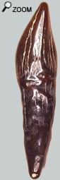
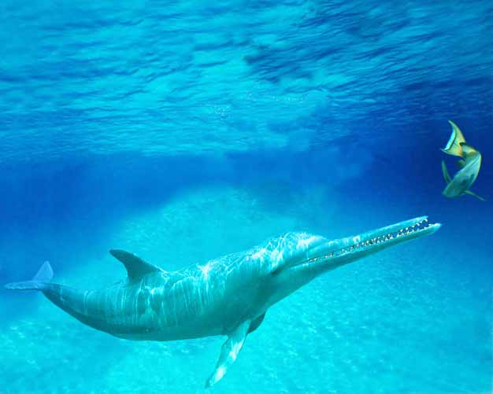

|
Les cétacés à dents : les odontocètes

On peut rencontrer d’assez nombreuses espèces de cétacés dans les faluns du bassin savignéen. L’abondance des espèces contraste avec la pauvreté des restes…
Squalodon
Squalodelphis
Pomatodelphis
Des cachalots
Un (ou plusieurs) dauphin à longue symphyse (''Acrodelphinidés'')
Des kentriodontidés
Des Ziphiidés
Et peut-être de mystérieux marsouins anachroniques
Nannolithax
Platylithax./...
Et puis il faut mentionner aussi des vertèbres de Mysticètes.
De toute façon, l'histoire des cétacés des faluns n'est sûrement pas finie d'écrire. Il est probable qu’on soit amené à trouver d’autres espèces dans les faluns.
Malheureusement l'identification des cétacés repose assez peu sur les dents mais plus sur des éléments crâniens sub-complets et sur les os de l'oreille. Une étude plus approfondie de la faune des cétacés des faluns est donc forcément limitée, mais nécessaire.
Prédateur en action!
 |